“datasets are often highly structured, containing clusters of non-independent observational units that are hierarchical in nature, and Linear Mixed Models allow us to explicitly model the non-independence in such data”
(Harrison et al., 2018)[1]
They allow modeling of data measured on different levels at the same time, for instance students nested within classes and schools, thus taking complex dependency structures into account
(Bürkner, 2018)[2]
These models inherently regularize estimates towards a central value to an extent that depends on the heterogeneity of the underlying groups.
(Green & Thomas, 2019)[3]
The regularizing aspects of the ‘partial pooling’ inherent in the structure of these models (averaging parameter estimates between in-group and across-subject loadings) help to mitigate the impacts of multiple comparisons by pulling an estimate towards its central tendency to the extent warranted by the between-group variance
(Green & Thomas, 2019)[3]
An investigation into stock valuation using regression models. We will use a couple of different techniques. Ordinary least squares, multi-levels models (estimated using both frequentist and bayesian approaches), and robust regression.
The valuation model is the P/B - ROE model. This model relates the ratio of market capitalisation over book value to return on equity. We expect that the slope of the regression co-efficient is positive, indicating that holding book value constant, a higher ROE leads to higher valuation.
As alluded to in the quotes above, the focus will be on multi-level models. Why? Multi-level models purport to provide more robust results by virtue of partial pooling. Partial pooling results in regularisation of parameter estimates. Robust regression techniques also purport to provide robust results (it’s all in the name isn’t it). Why not see how they compare.
The Theil-Sen regression, which has been discussed here is a robust technique and works to dampen the impact of outliers. It does so whereby the slope is derived taking the median of many individual slopes, that being fitted to each pair of data points.
Two approaches that have a similar aim. It will be interesting to review the difference in fit between models that pool data, and those that use robust techniques.
# Libraries
library(dplyr)
library(tidyr)
library(DBI)
library(RPostgres)
library(DescTools)
library(lubridate)
library(mblm)
library(romerb)
library(recipes)
library(lme4)
library(rethinking)
library(brms)
library(DT)
data("stock_data")
fundamental_raw <- stock_data
rm(stock_data)
# Set default theme
def_theme1 <- theme_minimal() +
theme(
legend.title = element_blank(),
legend.position = c(0.9,0.9),
legend.background = element_blank(),
legend.key = element_blank(),
plot.caption = element_text(size = 8, color = "grey55", face = 'italic'),
axis.title.y = element_text(size = 8, color = "darkslategrey"),
axis.title.x = element_text(size = 8, color = "darkslategrey"),
axis.text.y = element_text(size = 7, color = "darkslategrey"),
axis.text.x = element_text(size = 7, color = "darkslategrey")
)The data comprises around 750 individual companies. These companies are grouped into 11 sectors and 40 odd industries. The data is as of June 2021 and comes from the Securites and Exchange Commission via my Stock_master database.
Below are the variables of interest.
data <- fundamental_raw %>%
filter(date_stamp == as.Date('2021-06-30')) %>%
mutate(
log_mkt_cap = log(mkt_cap),
log_assets = log(total_assets),
log_equity_cln = log(-total_equity_cln),
roe = -roe,
roe_s = scale(roe),
leverage_s = scale(leverage),
sector = as.factor(sector),
industry = as.factor(industry)
) %>%
select(date_stamp, symbol, log_mkt_cap, log_assets, log_equity_cln, roe, roe_s, leverage, leverage_s, vol_ari_60d, sector, industry, log_pb)
data %>%
pivot_longer(
cols = c(log_pb, log_mkt_cap, roe, log_assets, log_equity_cln, leverage),
names_to = 'attribute',
values_to = 'value'
) %>%
ggplot(aes(value)) +
geom_histogram(bins = 45) +
facet_wrap(vars(attribute), scales = 'free') +
def_theme1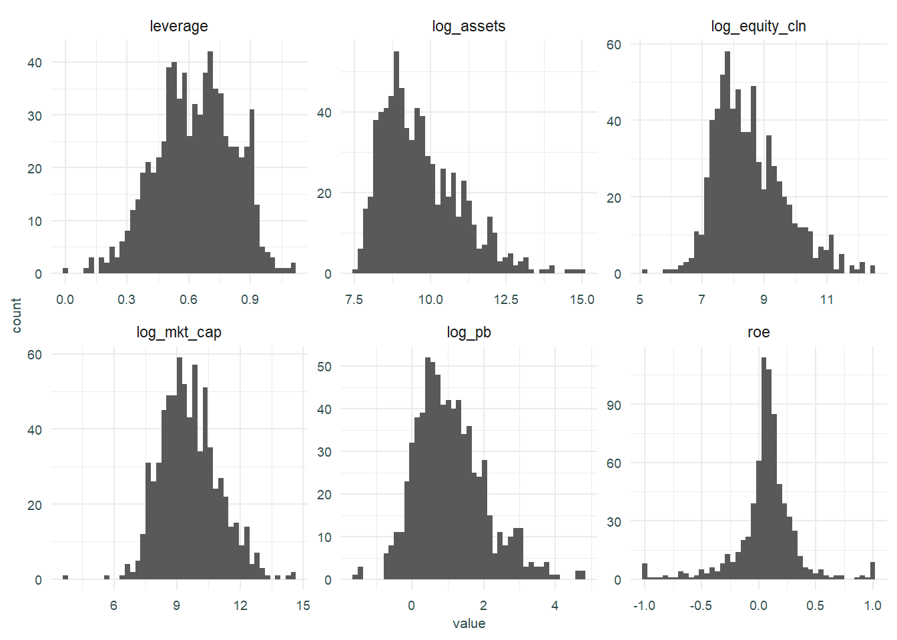
The plot below shows the relationship between the log price/book ratio and ROE for all stocks regardless of sector or industry membership. The blue line is the regression line fitted using OLS, the grey line that fitted using the Theil-Sen robust estimator, and magenta is a GAM smooth.
# For Theil Sen line https://stackoverflow.com/questions/48349858/how-can-i-use-theil-sen-method-with-geom-smooth
sen <- function(..., weights = NULL) {
mblm::mblm(...)
}
data %>%
ggplot(aes(x = roe_s, y = log_pb)) +
geom_point(alpha = 0.3) +
stat_smooth(method = 'gam', se = FALSE, formula = y ~ s(x), size = 0.6, colour = 'magenta') +
geom_smooth(method = lm, se = FALSE, size = 0.3, color = "#3366FF") +
geom_smooth(method = sen, se = FALSE, size = 0.3, colour = 'grey') +
labs(
title = 'Log book / price ratio versus return on equity',
x = 'Return on equity',
y = 'Log price / book ratio'
) +
theme(
plot.caption = element_text(size = 8, margin = margin(t = 10), color = "grey40", hjust = 0),
axis.text.x = element_blank(),
axis.text.y = element_blank(),
axis.ticks = element_blank()
) +
def_theme1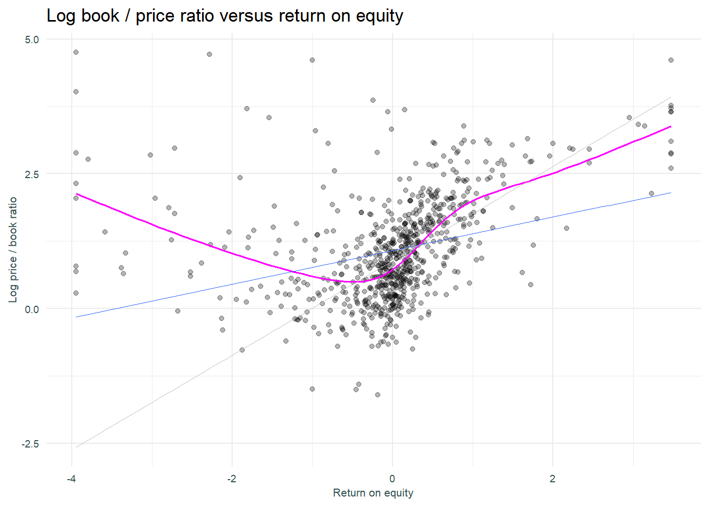
The Theil-Sen regression seems to fit the data better (at least on a rough eyeballing of the plot), fitting the dense cluster of data points more closely. As expected, the slope of the line is positive, indicating all else equal a higher valuation given higher return on equity.
There is a hint of non-linearity in the relationship.
Stocks with similar characteristics are grouped into sectors.
The plot below shows the same regression models estimated above (the GAM has been removed), except now applied individually to each sector.
# Model coefficients for OLS and Thiel Sen regression
model_coefs <- data %>%
group_by(date_stamp, sector) %>%
filter(n() > 1) %>%
nest() %>%
mutate(
fit_ols = purrr::map(.x = data, .f = ~lm(log_pb ~ roe, data = .x)),
fit_ts = purrr::map(.x = data, .f = ~mblm(log_pb ~ roe, data = .x, repeated = TRUE)),
int_ols = purrr::map_dbl(.x = fit_ols, .f = function(x) coef(summary(x))['(Intercept)', 'Estimate']),
slp_ols = purrr::map_dbl(.x = fit_ols, .f = function(x) coef(summary(x))['roe', 'Estimate']),
int_ts = purrr::map_dbl(.x = fit_ts, .f = function(x) coef(summary(x))['(Intercept)', 'Estimate']),
slp_ts = purrr::map_dbl(.x = fit_ts, .f = function(x) coef(summary(x))['roe', 'Estimate']),
x_min = purrr::map_dbl(.x = data, .f = ~min(.x$roe)),
x_max = purrr::map_dbl(.x = data, .f = ~max(.x$roe)),
y_min = int_ts + slp_ts * x_min,
y_max = int_ts + slp_ts * x_max
) %>%
select(-fit_ols, -fit_ts, -data) %>%
ungroup()
# Plot
p1 <- data %>%
ggplot(aes(x = roe, y = log_pb)) +
facet_wrap(~reorder(sector, as.numeric(sector)), ncol = 4, scales = 'free') +
geom_point(alpha = 0.3) +
geom_smooth(method = lm, se = FALSE, size = 0.4, color = "#3366FF") +
geom_segment(
aes(x = x_min, xend = x_max, y = y_min, yend = y_max),
alpha = 0.3,
data = filter(model_coefs, date_stamp == as.Date('2021-06-30')),
colour = 'grey40'
) +
labs(
title = 'Log book / price ratio versus return on equity by industry',
subtitle = 'Estimated with independent OLS (blue) and independent Theil-Sen (grey)',
x = 'Return on equity',
y = 'Log price / book ratio'
) +
def_theme1
p1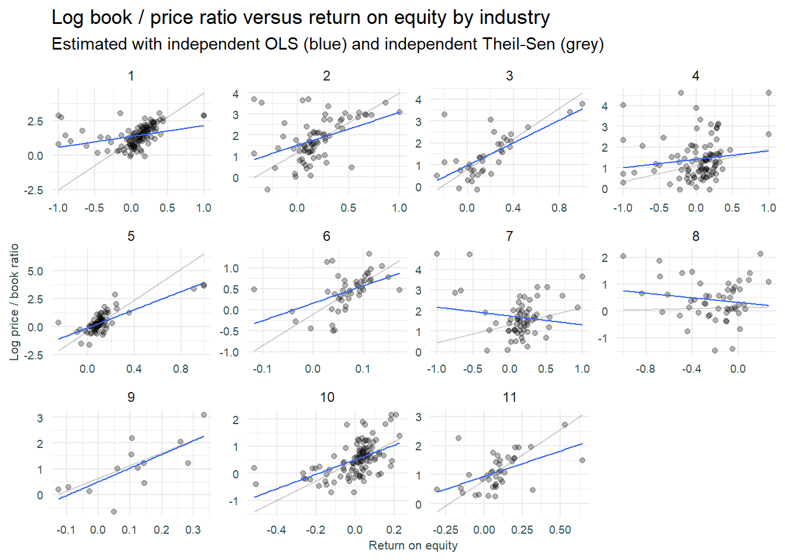
Once again we might argue the robust regression fits the data better. Witness group 1 comprising the “Industrials” sector, whereby the data points distinct from the diagonal cluster, skews the fit.
Below, the intercepts and slopes for each of the individual linear models are plotted.
model_coefs_all <- bind_rows(
data.frame(
sector = as.factor(model_coefs$sector),
intercept = model_coefs$int_ols,
slope = model_coefs$slp_ols,
source = rep("OLS", 11)
),
data.frame(
sector = as.factor(model_coefs$sector),
intercept = model_coefs$int_ts,
slope = model_coefs$slp_ts,
source = rep("TS", 11)
)
)
model_coefs_all %>%
filter(source %in% c('OLS','TS')) %>%
ggplot(aes(x = intercept, y = slope, colour = source)) +
geom_point(alpha = 0.7) + ylim(-1.25, 5.5) +
geom_text(aes(label = sector), nudge_x = 0.03, nudge_y = 0.05, check_overlap = TRUE, show.legend = FALSE, size = 3) +
labs(
title = 'Regression intercept and slope',
subtitle = 'Estimated with independent OLS and Theil-Sen',
x = 'Intercept',
y = 'Slope'
) +
def_theme1 +
scale_color_manual(values=c("OLS"="#3366FF", "TS"="grey40"))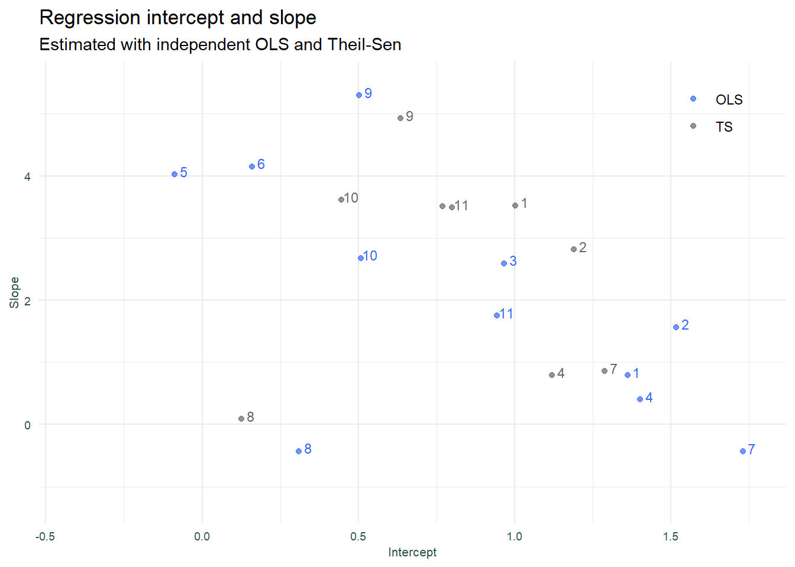
A couple of the OLS models have negative slopes and consistent with the observations above, the Theil-Sen slopes are more compact or closer to each other.
We now add a Least Squares Dummy Variable regression. The plot below is presented with fixed scales to demonstrate the identical slopes that the LSDV structure enforces.
data1 <- data %>%
select(date_stamp, sector, log_pb, log_mkt_cap, roe, log_assets, log_equity_cln, leverage)
rec <- recipe(log_pb ~ roe + sector, data = data1)
lsdv_data <- rec %>% step_dummy(sector, keep_original_cols = TRUE) %>% prep(training = data) %>% bake(new_data = NULL)
lsdv_mdl <- lm(log_pb ~ roe + sector_X2 + sector_X3 + sector_X4 +
sector_X5 + sector_X6 + sector_X7 + sector_X8 +
sector_X9 + sector_X10 + sector_X11,
data = lsdv_data)
lsdv_data$lsvd_pred <- predict(lsdv_mdl)
data$lsvd_pred <- lsdv_data$lsvd_pred
# Plot
p2 <- p1 +
geom_line(aes(x = roe, y = lsvd_pred), data = lsdv_data, size = 0.3, color = "black") +
labs(subtitle = 'Estimated with independent OLS (blue), independent Theil-Sen (grey) and LSDV (black)') +
facet_wrap(~reorder(sector, as.numeric(sector)), ncol = 4, scales = 'fixed') +
def_theme1
p2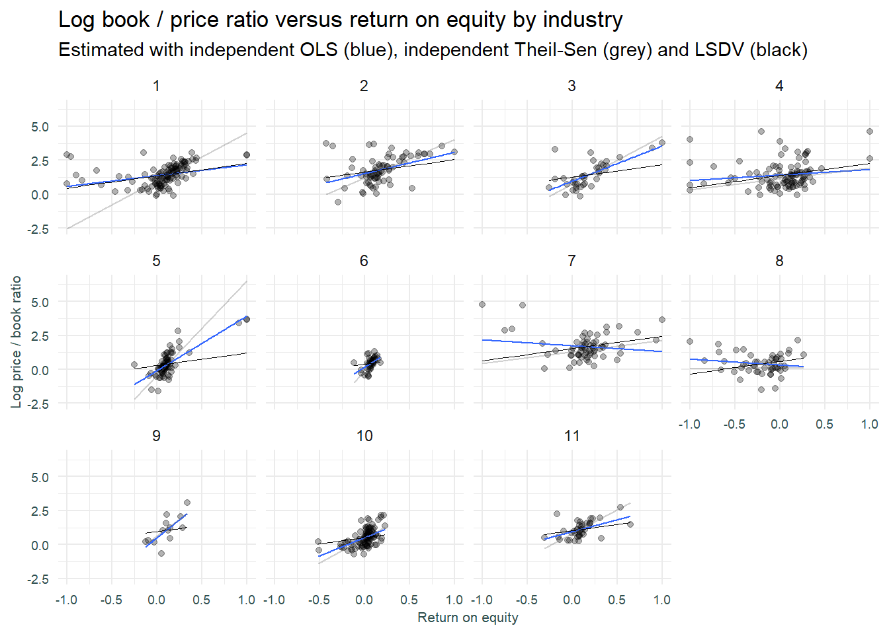
The plot is a little harder to read with the constant scale. We can see however that the LSDV forces an unnatural fit. Sector 5 for example, (Financial Services) has a much smaller slope than would appear warranted. This is driven by the influence of other sectors that have a large slope. Financials are in effect an outlier among sectors and the rigidity of the model does not allow the data to influence this sectors slope.
Intercepts and slopes for individual linear models by sector, and the LSDV model.
lsdv_mdl_coef <- as.data.frame(coef(lsdv_mdl)) %>%
tibble::rownames_to_column(var = 'intercept') %>%
mutate(slope = unname(coef(lsdv_mdl)['roe']))
lsdv_mdl_coef[1, 1] <- 1
lsdv_mdl_coef <- lsdv_mdl_coef[lsdv_mdl_coef$intercept != 'roe', ]
lsdv_mdl_coef$intercept <- as.factor(gsub("[^0-9.]", "", lsdv_mdl_coef$intercept))
lsdv_mdl_coef$source <- 'LSDV'
names(lsdv_mdl_coef)[1:2] <- c('sector','intercept')
lm_mdl_coefs <- model_coefs %>%
filter(date_stamp == as.Date('2021-06-30')) %>%
select(sector, int_ols, slp_ols) %>%
mutate(sector = as.factor(sector), source = 'OLS') %>%
rename(intercept = int_ols, slope = slp_ols)
model_coefs_all <- bind_rows(model_coefs_all, lsdv_mdl_coef)
# Plot
c2 <- model_coefs_all %>%
filter(source %in% c('OLS','TS','LSDV')) %>%
ggplot(aes(x = intercept, y = slope, colour = source)) +
geom_point(alpha = 0.7) + ylim(-1.25, 5.5) +
geom_text(aes(label = sector), nudge_x = 0.03, nudge_y = 0.05, check_overlap = TRUE, show.legend = FALSE, size = 3) +
labs(
title = 'Regression intercept and slope',
subtitle = 'Estimated with independent OLS, Theil-Sen and LSDV',
x = 'Intercept',
y = 'Slope'
) +
def_theme1 +
scale_color_manual(values=c("OLS"="#3366FF", "TS"="grey40", "LSDV"="black"))
# Plot
c2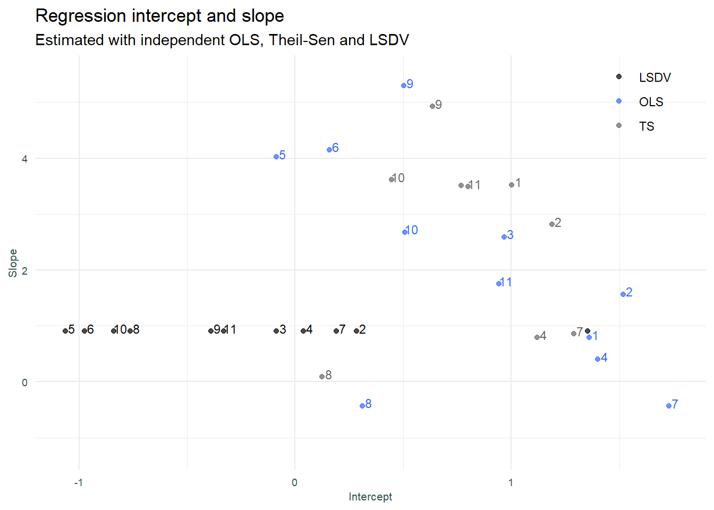 As discussed above, the LSDV model enforces a constant slope across groups and we can see this above.
We now look at Multi level models. The expectation here is that parameters estimated with this model (as compared to independent OLS models) will shrink to a mean as the overall data influences each groups coefficients.
Of interest is the extent to which the shrinkage aligns coeffiencents with the Theil-Sen robust model.
The mixed effects regression line plotted below is estimated with the lme4 package
# Mixed effects model with fixed and random intercept
lme_1 <- lmer(log_pb ~ roe + (1 + roe | sector), data = data)
# Add predicted values for line in scatter plot
data$lme1_pred <- predict(lme_1)
p3 <- p2 +
geom_line(aes(x = roe, y = lme1_pred), data = data, size = 0.4, color = 'magenta2', linetype = 'longdash') + #darkorchid3
labs(subtitle = 'Estimated with independent OLS (blue), independent Theil-Sen (grey), LSDV (black) \nand Multi level basis (dashed magenta)') +
facet_wrap(~reorder(sector, as.numeric(sector)), ncol = 4, scales = 'free')
p3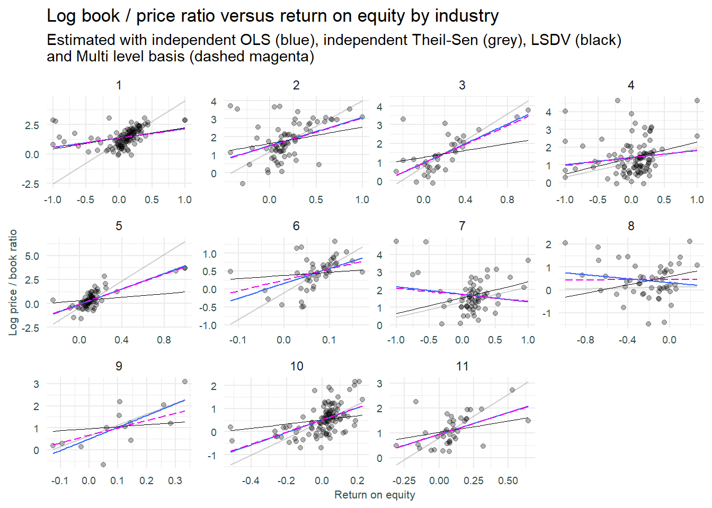
And the the coefficients.
# Plot coefficients - add coefficients to existing plot
# CHANGE SOURCE TO MODEL
lme1_coefs = data.frame(
sector = as.factor(rownames(ranef(lme_1)$sector)),
intercept = unname(coef(lme_1)$sector['(Intercept)']), # works only for single grouping variable
slope = unname(coef(lme_1)$sector['roe']), # works only for single grouping variable
source = rep('Multi level', 11)
)
model_coefs_all <- bind_rows(model_coefs_all, lme1_coefs)
model_coefs_all %>%
filter(source %in% c('OLS','TS','LSDV','Multi level')) %>%
ggplot(aes(x = intercept, y = slope, colour = source)) +
geom_point(alpha = 0.7) + ylim(-1.25, 5.5) +
geom_text(aes(label = sector), nudge_x = 0.03, nudge_y = 0.05, check_overlap = TRUE, show.legend = FALSE, size = 3) +
labs(
title = 'Regression intercept and slope',
subtitle = 'Estimated with independent OLS, LSDV, Theil-Sen and Mixed effects',
x = 'Intercept',
y = 'Slope'
) +
def_theme1 +
scale_color_manual(values=c("OLS"="#3366FF", "TS"="grey40", "LSDV"="black", "Multi level"="magenta2"))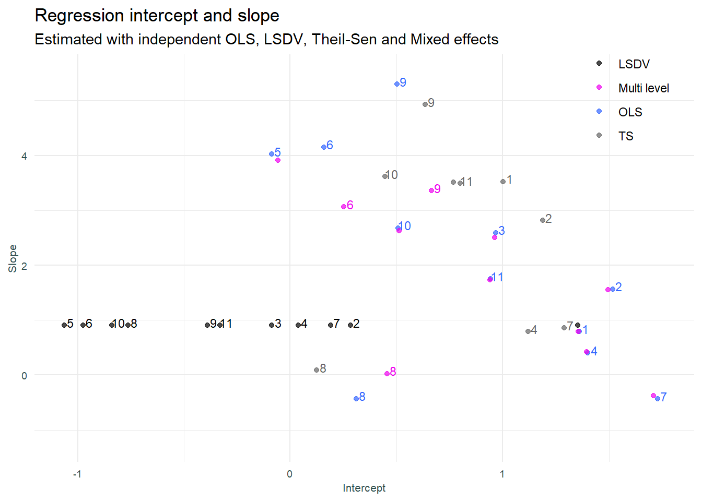
Compared to expectation, that was a little underwhelming. There is essentially no difference between the mixed effects and individual OLS models. This is probably due to the small number of groups (11) and the large amount of data points within each group.
EXPLAIN WHY THIS OCCURS - LESS VARIATION B/W GROUPS ETC. IT MAY BE PRUDENT TO GO NEXT LEVEL DOWN, IE INDUSTRY.
Note that the model as defined estimates a correlation between the intercept and slope for each sector.
IS THIS REASONABLE? WHAT DOES THE INTERCEPT AND SLOPE REPRESENT IN THE PB-ROE MODEL (REFER ORIGINAL PAPER)
Next, we estimate the multi level model using a bayesian approach. This will allow for the specification of priors for both the slope and intercept coefficients, and also the correlation between those coefficients. An appropriately specified prior should enforce more shrinkage (remember we are encoding our domain knowledge here, and assuming a negative relation between P/B ratio and ROE does not make sense).
The bayesian mixed effects model below is fit with the Rethinking package. In this model the predictor, return on equity, is standardised to mean zero and unit variance. This helps in setting appropriate priors.
The intercepts is defined as the outcome (log_pb) when the predictor (roe) is zero. When the predictor variable is standardised like we have just done, it’s mean is zero. So what is a reasonable expectation of the log_bp when roe is at it’s mean? Luckily the second plot above uses the standardised ROE and we can see this is associated with a log_pb of circa 1.25. That converts to a P/B ratio of around 3.5 (the exponent of 1.25).
DISCUSS STANDARD DEVIATION AND BETA PRIOR.
# Data in Rethinking / McElreath format
d <- list(
log_pb = data$log_pb,
roe = data$roe,
vol = data$vol_ari_60d,
sector = data$sector,
n = nrow(data)
)
set.seed(123)
bayes1 <- ulam(
alist(
# Response distribution
log_pb ~ normal(mu, sigma),
# Linear model & residual SD
mu <- a_sector[sector] + b_sector[sector] * roe,
sigma ~ exponential(1), # prior for residual SD of response dist.
# Variance covariance matrix for intercept and slope (note multi_normal = dmvnorm2)
c(a_sector, b_sector)[sector] ~ multi_normal(c(a, b), Rho, sigma_sector),
# Priors for covariance matrix
a ~ normal(1.25, 1), # prior for average intercept
b ~ normal(1, 1.5), # prior for average slope
Rho ~ lkj_corr(2), # prior for correlation matrix
sigma_sector ~ exponential(1) # prior for vector of SD's (slope & int) in covariance matrix
),
data = d,
cores = 4
)##
## SAMPLING FOR MODEL 'cffcf17c79be454a4c22c4edbb973e15' NOW (CHAIN 1).
## Chain 1:
## Chain 1: Gradient evaluation took 0 seconds
## Chain 1: 1000 transitions using 10 leapfrog steps per transition would take 0 seconds.
## Chain 1: Adjust your expectations accordingly!
## Chain 1:
## Chain 1:
## Chain 1: Iteration: 1 / 1000 [ 0%] (Warmup)
## Chain 1: Iteration: 100 / 1000 [ 10%] (Warmup)
## Chain 1: Iteration: 200 / 1000 [ 20%] (Warmup)
## Chain 1: Iteration: 300 / 1000 [ 30%] (Warmup)
## Chain 1: Iteration: 400 / 1000 [ 40%] (Warmup)
## Chain 1: Iteration: 500 / 1000 [ 50%] (Warmup)
## Chain 1: Iteration: 501 / 1000 [ 50%] (Sampling)
## Chain 1: Iteration: 600 / 1000 [ 60%] (Sampling)
## Chain 1: Iteration: 700 / 1000 [ 70%] (Sampling)
## Chain 1: Iteration: 800 / 1000 [ 80%] (Sampling)
## Chain 1: Iteration: 900 / 1000 [ 90%] (Sampling)
## Chain 1: Iteration: 1000 / 1000 [100%] (Sampling)
## Chain 1:
## Chain 1: Elapsed Time: 2.45 seconds (Warm-up)
## Chain 1: 0.916 seconds (Sampling)
## Chain 1: 3.366 seconds (Total)
## Chain 1:# Coefficients
bayes1_coef_tbl <- coeftab(bayes1)
bayes1_coef <- data.frame(coef = row.names(bayes1_coef_tbl@coefs), value = bayes1_coef_tbl@coefs, row.names = NULL)
bayes1_coef$t <- substr(bayes1_coef$coef, 1, 1)
bayes1_coef$s <- as.integer(gsub("\\D", "", bayes1_coef$coef))
bayes1_coef1 <- data.frame(
sector = as.factor(bayes1_coef[!is.na(bayes1_coef$s) & bayes1_coef$t == 'b', ]$s),
intercept = bayes1_coef[!is.na(bayes1_coef$s) & bayes1_coef$t == 'a', ]$bayes1 + bayes1_coef[bayes1_coef$coef == 'a', ]$bayes1 * 0,
slope = bayes1_coef[!is.na(bayes1_coef$s) & bayes1_coef$t == 'b', ]$bayes1 + bayes1_coef[bayes1_coef$coef == 'b', ]$bayes1 * 0, # included fixed effect / popn level param
source = 'Bayes normal'
)
model_coefs_all <- bind_rows(model_coefs_all, bayes1_coef1)
# Predictions
bayes1_pred_samples <- link(bayes1, data = d)
data$bayes1_pred <- apply(bayes1_pred_samples, 2, mean)Here is the plot of the regression.
# Plot
p4 <- p1 +
geom_line(aes(x = roe, y = bayes1_pred), data = data, size = 0.3, colour = 'magenta') +
labs(subtitle = 'Estimated with independent OLS (blue), independent Theil-Sen (grey) \nand Bayesian mixed effects (magenta)') +
def_theme1
p4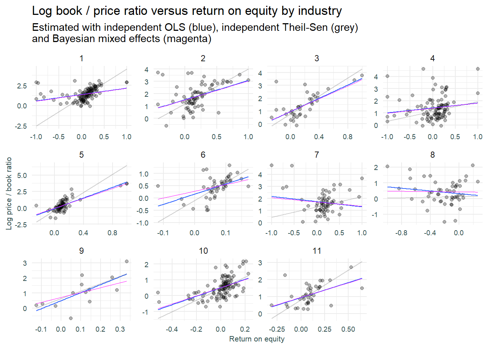
model_coefs_all %>%
filter(source %in% c('Bayes normal', 'Multi level', 'TS')) %>%
ggplot(aes(x = intercept, y = slope, colour = source)) +
geom_point(alpha = 0.7) + ylim(-1.25, 5.5) +
geom_text(aes(label = sector), nudge_x = 0.03, nudge_y = 0.05, check_overlap = TRUE, show.legend = FALSE, size = 3) +
labs(
title = 'Regression intercept and slope',
subtitle = 'Estimated with independent Bayesian mulitlevel and Mixed effects',
x = 'Intercept',
y = 'Slope'
) +
def_theme1 +
scale_color_manual(values=c("Bayes normal"="black", "TS"="grey40", "Multi level"="magenta2"))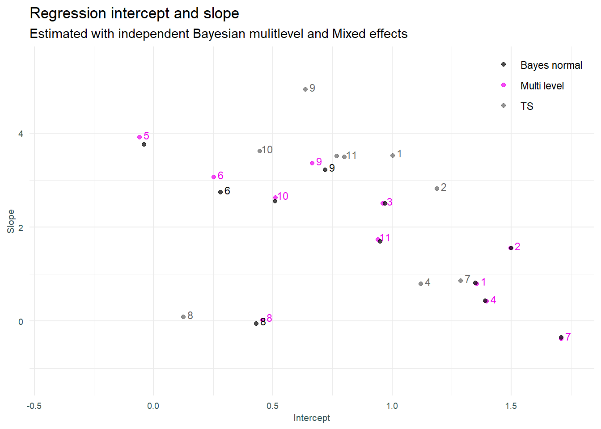
THE PLOT ABOVE TO SHOW BAYESIAN MULTI LEVEL, FREQUENTIST MIXED AND TS.
Let’s re-estimate the bayesian model using tighter priors and a student t likelihood for a more robust approach. Can we turn those pesky negative slopes positive?
# Data in Rethinking / McElreath format
set.seed(123)
bayes2 <- ulam(
alist(
# Response distribution
log_pb ~ dstudent(nu , mu, sigma),
# Linear model
mu <- a_sector[sector] + b_sector[sector] * roe,
# Variance co-variance matrix prior for intercept and slope
c(a_sector, b_sector)[sector] ~ multi_normal(c(a, b), Rho, sigma_sector),
a ~ normal(1.25, 1), # prior for average intercept
b ~ normal(1, 1.5), # prior for average slope
nu ~ gamma(2, 0.1), # use brms default prior
sigma_sector ~ exponential(1),
sigma ~ exponential(1), # prior for residual standard deviation of response dist.
Rho ~ lkj_corr(2) # prior for correlation matrix
),
data = d,
cores = 4
)##
## SAMPLING FOR MODEL '1f64478447f36bbb8c3df23290c06afa' NOW (CHAIN 1).
## Chain 1:
## Chain 1: Gradient evaluation took 0 seconds
## Chain 1: 1000 transitions using 10 leapfrog steps per transition would take 0 seconds.
## Chain 1: Adjust your expectations accordingly!
## Chain 1:
## Chain 1:
## Chain 1: Iteration: 1 / 1000 [ 0%] (Warmup)
## Chain 1: Iteration: 100 / 1000 [ 10%] (Warmup)
## Chain 1: Iteration: 200 / 1000 [ 20%] (Warmup)
## Chain 1: Iteration: 300 / 1000 [ 30%] (Warmup)
## Chain 1: Iteration: 400 / 1000 [ 40%] (Warmup)
## Chain 1: Iteration: 500 / 1000 [ 50%] (Warmup)
## Chain 1: Iteration: 501 / 1000 [ 50%] (Sampling)
## Chain 1: Iteration: 600 / 1000 [ 60%] (Sampling)
## Chain 1: Iteration: 700 / 1000 [ 70%] (Sampling)
## Chain 1: Iteration: 800 / 1000 [ 80%] (Sampling)
## Chain 1: Iteration: 900 / 1000 [ 90%] (Sampling)
## Chain 1: Iteration: 1000 / 1000 [100%] (Sampling)
## Chain 1:
## Chain 1: Elapsed Time: 2.578 seconds (Warm-up)
## Chain 1: 1.34 seconds (Sampling)
## Chain 1: 3.918 seconds (Total)
## Chain 1:# Coefficients
bayes2_coef_tbl <- coeftab(bayes2)
bayes2_coef <- data.frame(coef = row.names(bayes2_coef_tbl@coefs), value = bayes2_coef_tbl@coefs, row.names = NULL)
bayes2_coef$t <- substr(bayes2_coef$coef, 1, 1)
bayes2_coef$s <- as.integer(gsub("\\D", "", bayes2_coef$coef))
bayes2_coef1 <- data.frame(
sector = as.factor(bayes2_coef[!is.na(bayes2_coef$s) & bayes2_coef$t == 'b', ]$s),
intercept = bayes2_coef[!is.na(bayes2_coef$s) & bayes2_coef$t == 'a', ]$bayes2 + bayes2_coef[bayes2_coef$coef == 'a', ]$bayes2 * 0,
slope = bayes2_coef[!is.na(bayes2_coef$s) & bayes2_coef$t == 'b', ]$bayes2 + bayes2_coef[bayes2_coef$coef == 'b', ]$bayes2 * 0, # included fixed effect / popn level param
source = 'Bayes student'
)
model_coefs_all <- bind_rows(model_coefs_all, bayes2_coef1)
# Predictions
bayes2_pred_samples <- link(bayes2, data = d)
data$bayes2_pred <- apply(bayes2_pred_samples, 2, mean)
# Plot
p5 <- data %>%
ggplot(aes(x = roe, y = log_pb)) +
facet_wrap(~reorder(sector, as.numeric(sector)), ncol = 4, scales = 'free') +
geom_point(alpha = 0.3) +
geom_line(aes(x = roe, y = bayes1_pred), data = data, size = 0.3, colour = 'blue') +
geom_line(aes(x = roe, y = bayes2_pred), data = data, size = 0.3, colour = 'green') +
geom_segment(
aes(x = x_min, xend = x_max, y = y_min, yend = y_max),
alpha = 0.3,
data = filter(model_coefs, date_stamp == as.Date('2021-06-30')),
colour = 'grey40', size = 0.3
) +
labs(
title = 'Log book / price ratio versus return on equity by industry',
subtitle = 'Estimated with Bayes normal (blue), Bayes student t (green) and independent Theil-Sen (grey)',
x = 'Return on equity',
y = 'Log price / book ratio'
) +
def_theme1
p5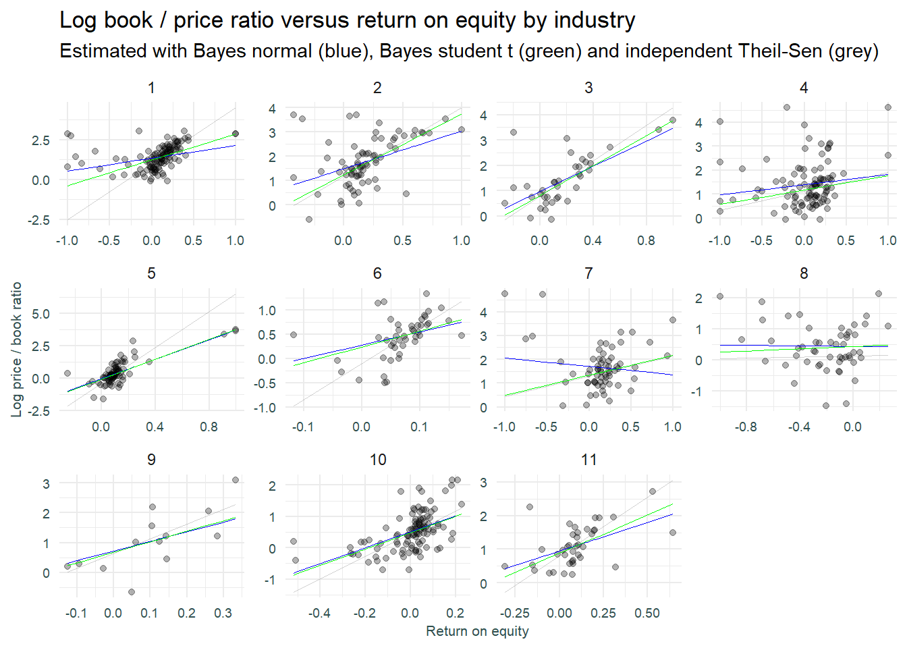
model_coefs_all %>%
filter(source %in% c('Bayes normal','Bayes student', 'TS')) %>%
ggplot(aes(x = intercept, y = slope, colour = source)) +
geom_point(alpha = 0.7) + ylim(-1.25, 5.5) +
geom_text(aes(label = sector), nudge_x = 0.03, nudge_y = 0.05, check_overlap = TRUE, show.legend = FALSE, size = 3) +
labs(
title = 'Regression intercept and slope',
subtitle = 'Estimated with independent TS and Bayesian multi level (student & normal)l',
x = 'Intercept',
y = 'Slope'
) +
def_theme1 +
scale_color_manual(values=c("Bayes normal"="blue", "Bayes student"="green", "TS"="grey40", "Multi level"="magenta2"))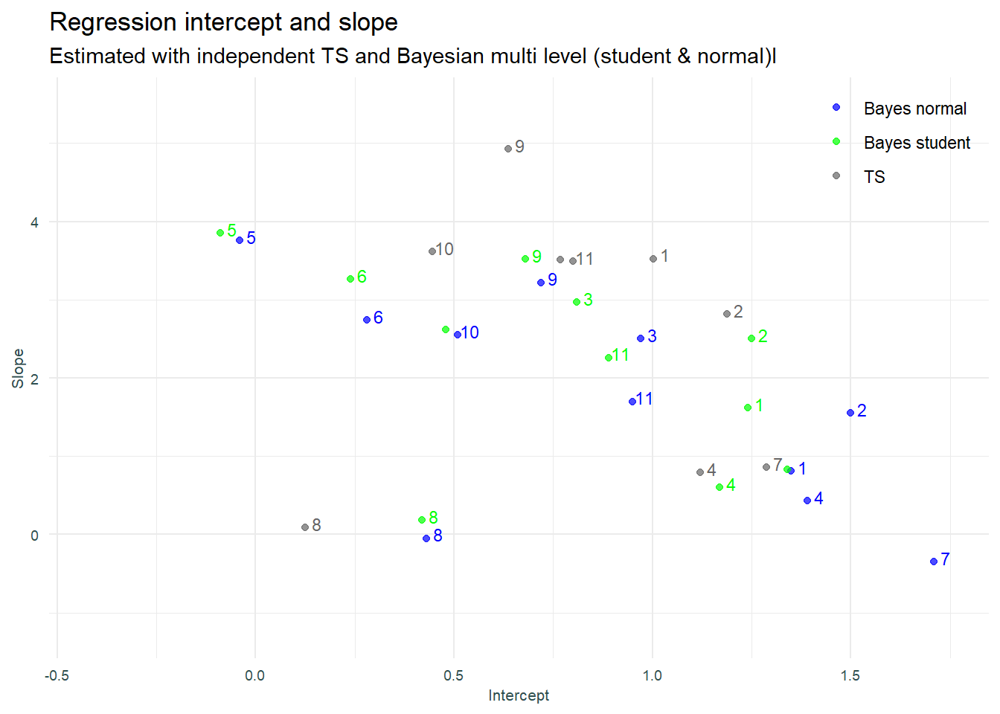
Model per McElreath p 493.
# Data in Rethinking / McElreath format
set.seed(123)
bayes3 <- ulam(
alist(
# Response distribution
log_pb ~ dstudent(nu, log_pb_t, sigma),
vector[n]:log_pb_t ~ dstudent(nu_t, mu, sigma), # declare a vector of length n for each log_pb_t??? https://github.com/rmcelreath/rethinking/tree/Experimental#multilevel-model-formulas
# Linear model
mu <- a_sector[sector] + b_sector[sector] * roe,
# Variance co-variance matrix prior for intercept and slope
c(a_sector, b_sector)[sector] ~ multi_normal(c(a, b), Rho, sigma_sector),
a ~ normal(1.25, 1), # prior for average intercept
b ~ normal(1, 1.5), # prior for average slope
nu ~ gamma(2, 0.1), # brms default prior
nu_t ~ gamma(2, 0.1), # brms default prior
sigma_sector ~ exponential(1),
sigma ~ exponential(1), # prior for residual standard deviation of response dist.
Rho ~ lkj_corr(2) # prior for correlation matrix
),
data = d,
cores = 4
)##
## SAMPLING FOR MODEL '2f91776600a6b798e2d9cbe9a551e7f0' NOW (CHAIN 1).
## Chain 1:
## Chain 1: Gradient evaluation took 0 seconds
## Chain 1: 1000 transitions using 10 leapfrog steps per transition would take 0 seconds.
## Chain 1: Adjust your expectations accordingly!
## Chain 1:
## Chain 1:
## Chain 1: Iteration: 1 / 1000 [ 0%] (Warmup)
## Chain 1: Iteration: 100 / 1000 [ 10%] (Warmup)
## Chain 1: Iteration: 200 / 1000 [ 20%] (Warmup)
## Chain 1: Iteration: 300 / 1000 [ 30%] (Warmup)
## Chain 1: Iteration: 400 / 1000 [ 40%] (Warmup)
## Chain 1: Iteration: 500 / 1000 [ 50%] (Warmup)
## Chain 1: Iteration: 501 / 1000 [ 50%] (Sampling)
## Chain 1: Iteration: 600 / 1000 [ 60%] (Sampling)
## Chain 1: Iteration: 700 / 1000 [ 70%] (Sampling)
## Chain 1: Iteration: 800 / 1000 [ 80%] (Sampling)
## Chain 1: Iteration: 900 / 1000 [ 90%] (Sampling)
## Chain 1: Iteration: 1000 / 1000 [100%] (Sampling)
## Chain 1:
## Chain 1: Elapsed Time: 8.499 seconds (Warm-up)
## Chain 1: 7.821 seconds (Sampling)
## Chain 1: 16.32 seconds (Total)
## Chain 1:# Coefficients
bayes3_coef_tbl <- coeftab(bayes3)
bayes3_coef <- data.frame(coef = row.names(bayes3_coef_tbl@coefs), value = bayes3_coef_tbl@coefs, row.names = NULL)
bayes3_coef$t <- substr(bayes3_coef$coef, 1, 1)
bayes3_coef$s <- as.integer(gsub("\\D", "", bayes3_coef$coef))
bayes3_coef1 <- data.frame(
sector = as.factor(bayes3_coef[!is.na(bayes3_coef$s) & bayes3_coef$t == 'b', ]$s),
intercept = bayes3_coef[!is.na(bayes3_coef$s) & bayes3_coef$t == 'a', ]$bayes3 + bayes3_coef[bayes3_coef$coef == 'a', ]$bayes3 * 0,
slope = bayes3_coef[!is.na(bayes3_coef$s) & bayes3_coef$t == 'b', ]$bayes3 + bayes3_coef[bayes3_coef$coef == 'b', ]$bayes3 * 0, # included fixed effect / popn level param
source = 'Bayes student me'
)
model_coefs_all <- bind_rows(model_coefs_all, bayes3_coef1)
# Predictions
bayes3_pred_samples <- link(bayes3, data = d)
data$bayes3_pred <- apply(bayes3_pred_samples, 2, mean)Scatter plots
p6 <- p5 +
geom_line(aes(x = roe, y = bayes3_pred), data = data, size = 0.3, colour = 'red') +
labs(
title = 'Log book / price ratio versus return on equity by industry',
subtitle = 'Estimated with Bayes normal (blue), Bayes student t (green), Bayes student t with \nmeasurement error (red) and independent Theil-Sen (grey)',
x = 'Return on equity',
y = 'Log price / book ratio'
)
p6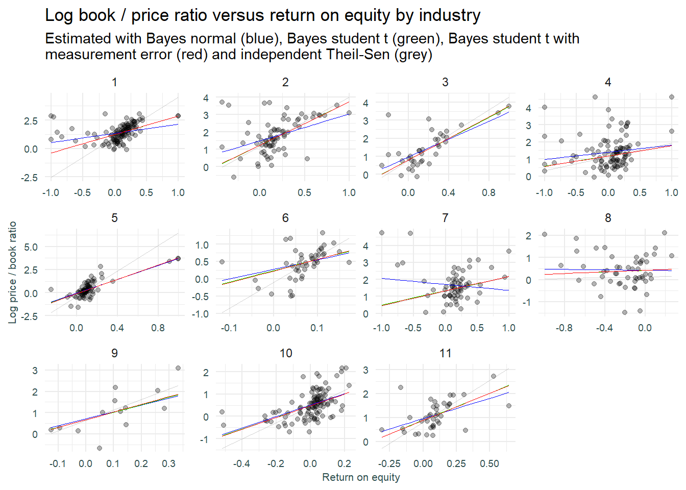
Coefficient plots
model_coefs_all %>%
filter(source %in% c('Bayes normal','Bayes student','Bayes student me', 'TS')) %>%
ggplot(aes(x = intercept, y = slope, colour = source)) +
geom_point(alpha = 0.7) + ylim(-1.25, 5.5) +
geom_text(aes(label = sector), nudge_x = 0.03, nudge_y = 0.05, check_overlap = TRUE, show.legend = FALSE, size = 3) +
labs(
title = 'Regression intercept and slope',
subtitle = 'Estimated with various Bayesian multi level specifications and independent Theil-Sen',
x = 'Intercept',
y = 'Slope'
) +
def_theme1 +
scale_color_manual(values=c("Bayes normal"="blue", "Bayes student"="green", "Bayes student me"="red", "TS"="grey40"))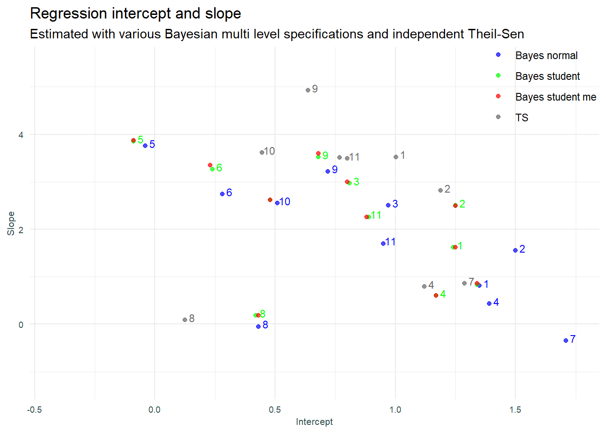
Lastly, we will look at a mixed model with to levels of nesting (this is where the hierarchical term comes from).
TO DO - Nested by sector and industry, individual OLS, TS, bayes mixed and freq mixed
brmsb1 <-
brm(
data = d,
family = student,
#log_pb ~ 1 + roe + (1 + roe || sector),
log_pb | se(vol, sigma = TRUE) ~ 1 + roe + (1 + roe || sector),
prior = c(
prior(normal(5, 2), class = Intercept),
prior(normal(-1, 0.5), class = b),
prior(exponential(1), class = sd),
prior(exponential(1), class = sigma),
prior(gamma(2, 0.1), class = nu)
#prior(lkj(2), class = cor) not required as correlation not being modeled
),
iter = 2000, warmup = 1000, chains = 4, cores = 4,
)
# Coefficients
b1_coef <- coef(b1)
b1_coef_df <- data.frame(b1_coef)
b1_coef_df$sector <- as.factor(rownames(b1_coef_df))
b1_coef_df$source <- rep('Bayes student me (no correlation)', 11)
b1_coef_df <-b1_coef_df[, c('sector', 'sector.Estimate.Intercept', 'sector.Estimate.roe', 'source')]
colnames(b1_coef_df) = c("sector", "intercept", "slope", "source")
model_coefs_all <- bind_rows(model_coefs_all, b1_coef_df)
#model_coefs_all <- model_coefs_all[-c(89:110), ]model_coefs_all %>%
filter(source %in% c('Bayes student me (no correlation)','Bayes student me')) %>%
ggplot(aes(x = intercept, y = slope, colour = source)) +
geom_point(alpha = 0.7) + ylim(-1.25, 5.5) +
geom_text(aes(label = sector), nudge_x = 0.03, nudge_y = 0.05, check_overlap = TRUE, show.legend = FALSE, size = 3) +
labs(
title = 'Regression intercept and slope',
subtitle = 'Estimated with Bayesian multi level student t \nlikelihood (correlation and no correlation - brms)',
x = 'Intercept',
y = 'Slope'
) +
def_theme1 +
scale_color_manual(values=c("Bayes student me (no correlation)"="blue", "Bayes student me"="magenta2"))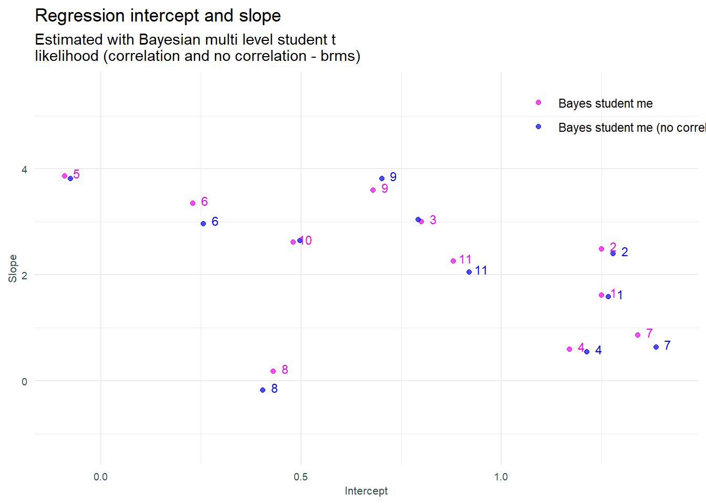
None of the above has communicated uncertainty around parameters for the bayesian models
[1] Harrison XA, Donaldson L, Correa-Cano ME, Evans J, Fisher DN, Goodwin CED, Robinson BS, Hodgson DJ, Inger R. 2018. A brief introduction to mixed effects modelling and multi-model inference in ecology. PeerJ 6:e4794 https://doi.org/10.7717/peerj.4794
[2] Paul-Christian Bürkner. Advanced Bayesian Multilevel Modeling with the R Package brms. 2018
[3] Green, Brice and Thomas, Samuel, Inference and Prediction of Stock Returns using Multilevel Models (August 31, 2019). Available at SSRN: https://ssrn.com/abstract=3411358 or http://dx.doi.org/10.2139/ssrn.3411358
Mixed effects models using lme4 lme4 manual:- https://lme4.r-forge.r-project.org/book/
vignette:- https://cran.r-project.org/web/packages/lme4/vignettes/lmer.pdf
Doug Bates pres:- http://pages.stat.wisc.edu/~bates/UseR2008/WorkshopD.pdf
Example to find lme4 predict coefficients:- https://stats.stackexchange.com/questions/174203/predict-function-for-lmer-mixed-effects-models/174227
Various syntax notes:- https://yury-zablotski.netlify.app/post/mixed-effects-models-2/
Syntax cheat sheet:- https://stats.stackexchange.com/questions/13166/rs-lmer-cheat-sheet
Sweep function:- https://stackoverflow.com/questions/3444889/how-to-use-the-sweep-function
Plot reference:-https://www.tjmahr.com/plotting-partial-pooling-in-mixed-effects-models/
Model diagnostics:- https://www.ssc.wisc.edu/sscc/pubs/MM/MM_DiagInfer.html
Shrinkage & correlation:- http://doingbayesiandataanalysis.blogspot.com/2019/07/shrinkage-in-hierarchical-models-random.html
Diagnostics - https://www.ssc.wisc.edu/sscc/pubs/MM/MM_DiagInfer.html
https://bayesiancomputationbook.com/markdown/chp_04.html#mixing-group-and-common-parameters
https://www.baseballprospectus.com/news/article/26196/prospectus-feature-dra-an-in-depth-discussion/
Robust bayesian regression - https://solomonkurz.netlify.app/post/2019-02-02-robust-linear-regression-with-student-s-t-distribution/